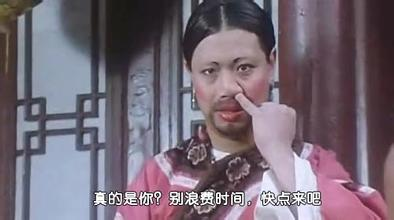
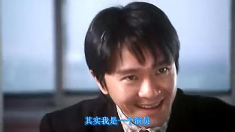
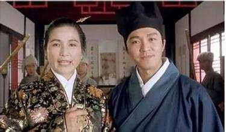
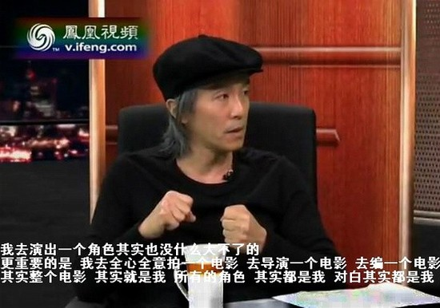

一条底裤，一张厕纸都有它的重要性。
为什么周星驰电影里的配角都那么经典？
1，周星驰赋予了他们什么样的生命力？
2，他们为何成为短暂的荧幕经典？
3，他们为何消失了？
一只蟑螂出现在周星驰的电影里，从此全中国的蟑螂从此有了自己的名号，叫小强。
黄圣依出现在功夫里不到5分钟，仅仅只有5分钟红遍全中国……
他电影里的配角有100%演艺生涯仅仅只是出现在周氏电影里，离开周星驰，便成了路人甲。
我们甚至都记不起那些龙套除了出现在电影之外，还干了些什么。仅仅只是昙花一现，便消声灭迹了。
这是一件超级值得注意的周氏特点，至少有90%的演员一生中被人记住的成就仅仅是出现在周星驰的电影里，连刘镇伟最拿得出手的《大话西游》《回魂夜》。这种现象实属罕见，那些配角离开周星驰之后也出演了电视剧电影甚至发了唱片，几乎不再引起观众注意。
天桥下的乞丐也该有自己的属性，当他出现在画面里就该展示自己的属性，即性格、特点、表情、技能，甚至是作为乞丐都该表现出当歌唱家的潜质，或者向小孩推销盗版如来神掌秘籍，他是个乞丐，有自己的游戏规则。而我们看大多数电影，乞丐都是要饭的，毫无新意的作出一副贱样，几句烂俗的台词。拜托，乞丐也有性生活啊，我就不信天桥上那么多乞丐没有偷窥过走上台阶缓缓露底的美女。
1，周星驰赋予了他们什么样的生命力？
周星驰接受柴静采访时说，当初跑龙套时，它觉得自己不该是一个普通的龙套，我的出现应该有他出现的意义，哪怕是被一掌打死，“啊”的一声都是私底下反复锻炼过的。
一个天才长达五年的龙套生涯，受尽了冷落，得不到重视，被忽略，被埋没。当他红遍大江南北有权利掌控他人角色的时候，便不断的把这些龙套重视起来。他认为每个人的存在都本该有他的价值和意义，只是残酷的现实并没有把这些小角色放大而已。所以就有了以下台词：
我表面上是一个卖猪肉了，其实我是一个舞蹈家——如花
我是酱爆，我从来都没有放弃过做一个作曲家的理想——酱爆
这表面上看起来是一双皮鞋，其实它是一部行动电话——皮鞋
无论你怎么打击我，我都要告诉你，其实我是一个演员——周星驰
许多自作聪明的人认为周星驰大量抄袭好莱坞作品，以致敬的名义抄袭金凯瑞，我不同意。实际上周星驰掌握电影主体结构之后，每部电影都是有自己内核的，这一点暂且不表。说说他的内核，即老生常谈的小人物命运，这个真的是一个小人物经过长时间奋斗之后用作品对命运的反抗。
周星驰说他小时候很孤僻，喜欢看窗外观察人们的行为，人们很好笑。这是周星驰采访上面说的话，请相信周星驰采访中的任何一段话，他不是那种故作深沉卖弄学识的二三线明星访谈，也不是那种大谈理想伟大或者歌颂平凡的哲学家（无贬义），他不是一个作家，不是一个哲学家，他甚至谈不上一个专业的电影导演，电影理论知识比不上二流艺考生。就是这么一个简单的人，在采访中简单朴实的回忆一些过去。
2，他们为什么仅仅成就了短暂的荧幕经典？
对于每个角色，他反复强调要再好一点点，能不能再好一点点，就一点点也行。
每一个角色的出现都是经过精心打磨，不断NG才修得一个完美的角色。然而这种完美主义恰好得罪整个片场，因为每个演员并不是抱着成就经典的态度来的，他们习惯性的龙套思想根本没有看重自己的角色。也许在别的剧组很轻易的就过了，领便当走人。实际上他们不具备成就经典的潜质，是周星驰反复NG，不断尝试，力求完美带来的结果。也就是说他们的演技并不好，也无挑选剧本的独到眼光，并没有作为一个演员的素养，只是他们走进周星驰电影被强行拉进同一个水平，你甚至能感觉到这些配角演的跟周星驰一样好。
所以我完全相信周星驰在拍摄期间简单、直接、果断、严厉的要求每个演员达到同一个水准。
林子聪在综艺节目中控诉周星驰高标准、工资低，拍摄少林足球8个月只拿到四五万块钱酬劳。你最近接那么low的游戏广告费被你吃了？哦是真的吃了，那么胖，对不起，我早该看出来的。《西游降魔》的副导演说的好，跟周星驰拍电影就算没有酬劳又能怎么样呢，你去跟一个老师学东西难道不交学费吗，更何况他的电影现在几乎是全球播映，作为一个无名演员能赢得那么多掌声，简直求之不得啊。可惜很多人到现在才看穿这个道理，罗家英饰演的达文西和唐僧够经典了吧，他当时因为酬劳问题也公开控诉过周星驰，老实说，面对这么经典的角色都不忍心黑他，直到他自己不断参加综艺节目，接广告之后才发表博客向周星驰道歉，有几个人看过那篇博客？林子聪为什么控诉过周星驰之后又演了功夫和美人鱼？他们后来懂了这个道理。郑佩佩曾与周星驰合作过电影《唐伯虎点秋香》，她在片中饰演“华夫人”的被网友被问及“对向太炮轰周星驰怎么看”时，郑佩佩力挺星爷：“我可不能忘恩负义，没有星仔，内地几亿人口怎么会认识我‘华夫人’啊！”
3，他们为何消失？
我不知道罗家英离开周星驰还演过什么角色，没有人知道了。陈百祥、吴孟达、酱爆、葛明辉、陈国坤、黄一飞，洪爷、如花、田启文……太多了，他们也演过其他的电影和电视剧，你翻出来看看就知道什么是真正的路人甲了，根本无法引起注意。他们并没有特别强大的天赋才能，离开周星驰便失去了光环，留在荧幕上的永远被刻上了周星驰符号，短暂，经典。
接下来说说周星驰电影令人铭记的特点，所有角色其实都在演他自己：每一个配角都赋予了主角的光环，你听说过主角嫉妒配角戏份太多而产生嫉妒心理吗？在周星驰电影里恰恰相反，他希望每个演员都跟主角一样耀眼，每个人都可以发光发亮，如果演员是个不得志的千里马，走进周星驰剧组就算是人生的一个跷跷板了，给你机会和舞台，蹦多高都是本事。
你们知道包租婆那个经典的角色吗，元秋几乎没有正式出演过电影啊，一个天才演员或许一辈子都不会被人发现了。你能体会奋斗了一辈子晚年才获取一点掌声吗，热泪盈眶啊！